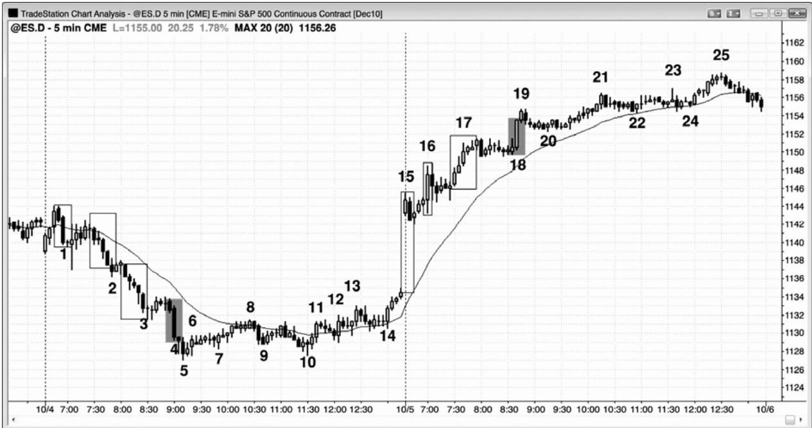
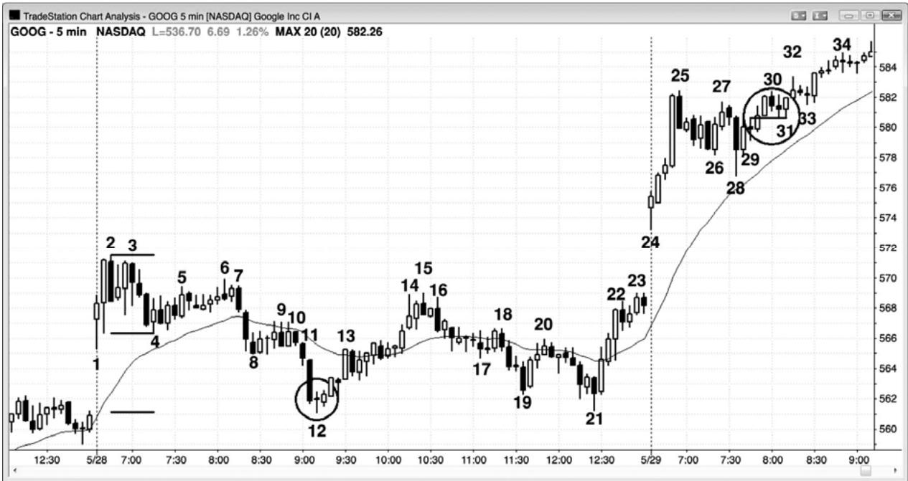
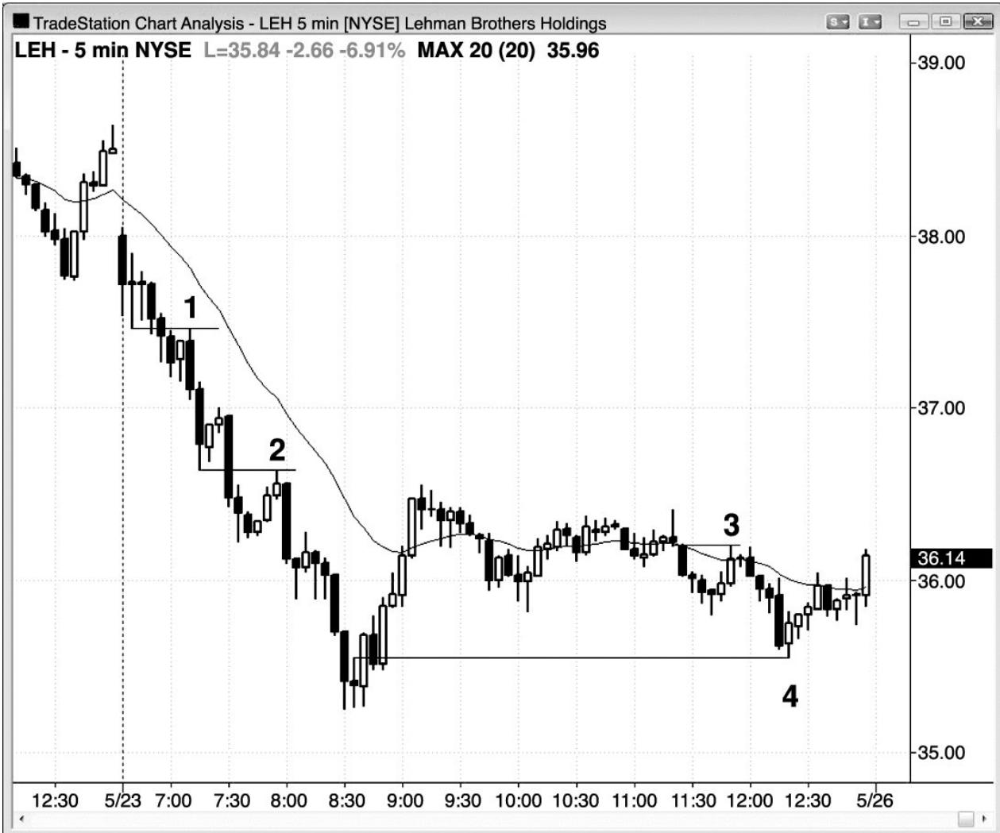
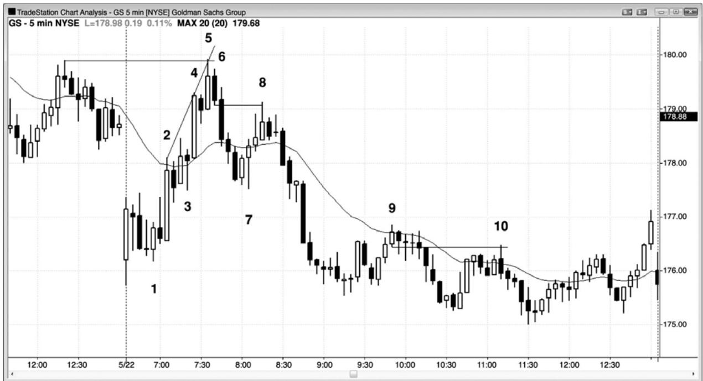
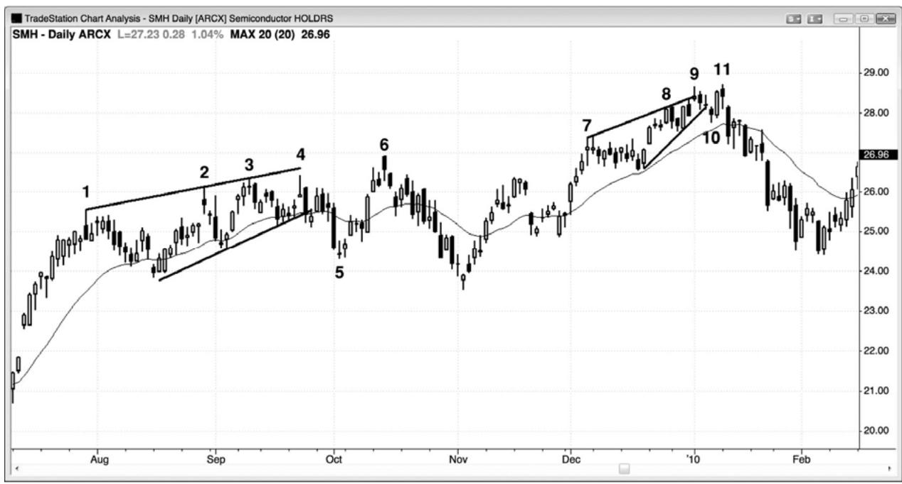
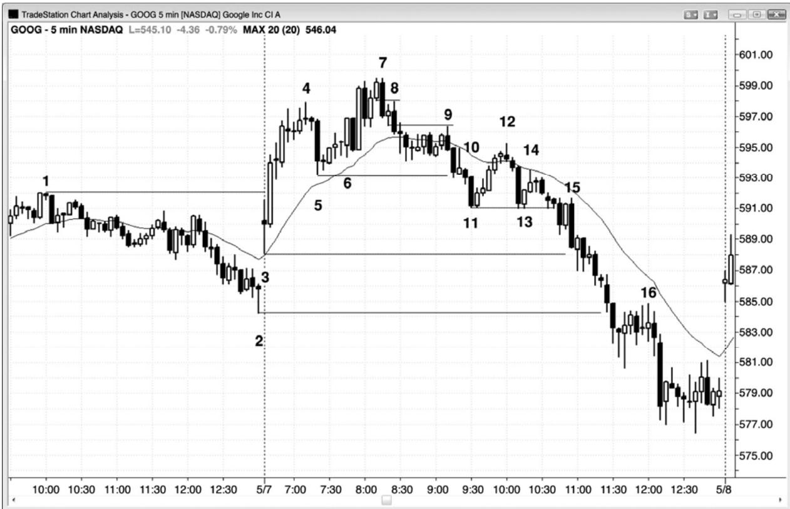
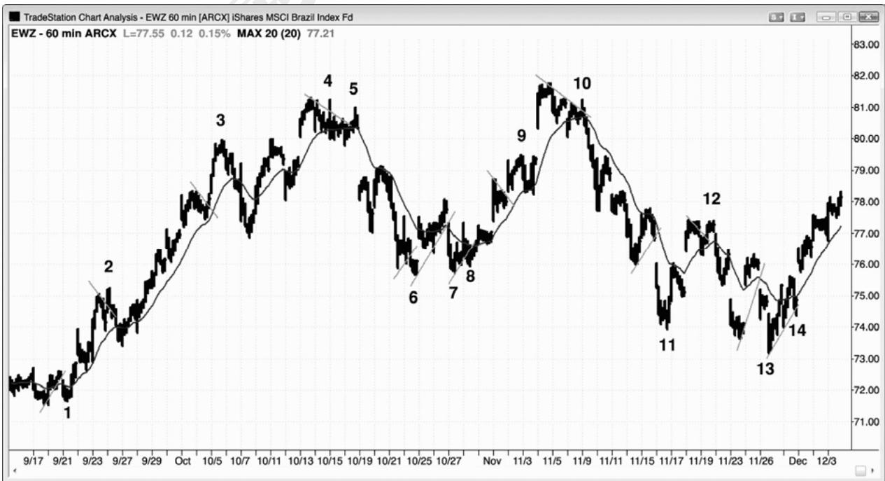
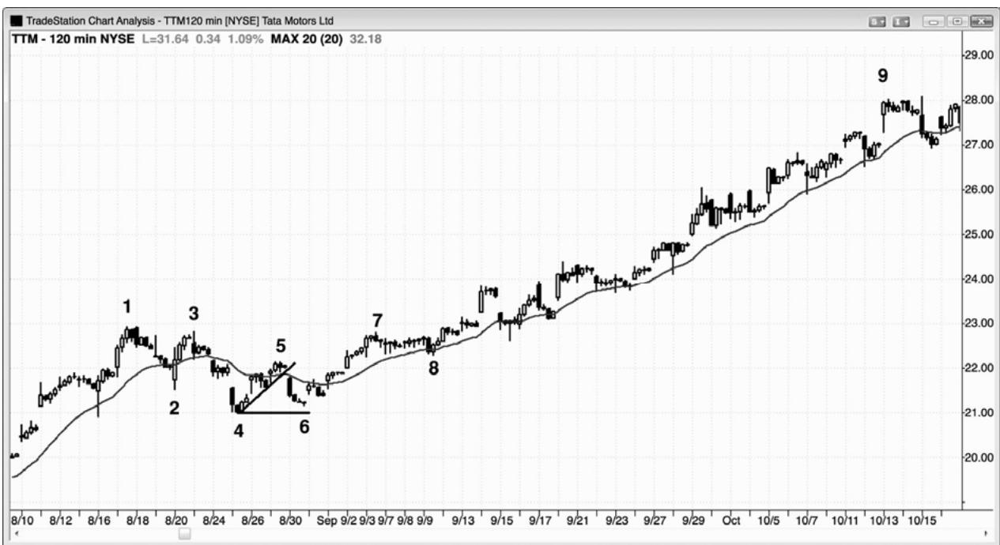
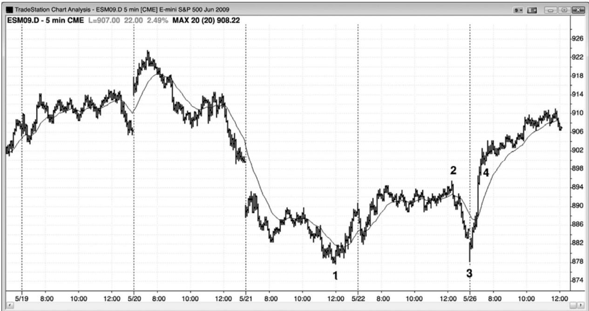
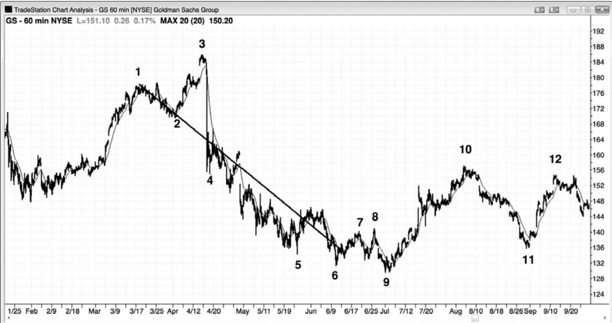

第5章 失败的突破，突破回撤，以及突破测试¶
第 5 章 失败的突破，突破回撤，以及突破测试
突破，突破失败，要么趋势反转、要么突破回撤，趋势恢复，这一系列变化是价格行为中最为常见的，每天的大部分交易都可以解释为这一过程的某种变形。对于规模较大的突破序列，它是重要趋势反转的基础，将在第三本书中讨论，其中包含趋势线突破，然后是测试趋势极点的突破回撤。对于所有突破，都会出现上述过程，但大多是针对多头或空头旗形的突破，多头或空头旗形是与屏幕上主要趋势的方向相反的小型趋势。
每当出现突破时，市场最终都会回撤，然后测试之前的重要价位。回撤的开始使突破失败，在这一点处，你应该把所有突破都看作失败的突破，尽管它们接下来可能恢复。如果失败成功地令趋势反转，那么突破就已经失败，反转就已经成功。如果反转只持续了一两棒，然后突破恢复，那么反转尝试只是突破之后的一次回撤（所有未能使市场反转的失败突破都是突破回撤架构，可以用来在与突破相反的方向上交易）。举例说明，如果出现一个多头突破，然后市场回撤至入场价位附近，形成一条买进信号棒，并且触发多头交易，那么这个回撤是对突破的测试（是一个突破测试），在最近的回撤棒高点上方形成一个做多架构。如果趋势恢复，那么突破棒通常会成为一个测量缺口，如果趋势反转，那么多头趋势棒就成为一个耗尽缺口，空头趋势棒就成为一个突破缺口（缺口将在第 6 章讨论）。测试可能在突破后一棒或20 几棒后出现。那么测试的是什么呢？测试的是突破将会成功还是失败。市场由于卖压而在突破后回撤。多方正在卖出，部分获利了结他们的多头头寸，空方正在卖出，尝试令突破失败，把总在场内交易状态向下翻转。多空双方都在评估突破的强弱。如果架构和入场棒很强，那么交易者们将预期价格上涨。当市场回撤至突破区时，对于已经做多的多头来说，无论他们是否会部分了结在突破时买进的头寸，他们都会把回撤看作再次买进的机会。错过初始入场的多头也会利用这次回撤做多。突破前在入场价位下方做空的空头，认为市场已经转变为总在场内多头状态，将会进一步上涨。所以他们将把回撤看作小赔离场的机会。在突破做空的空头，看到那个突破很强，尝试令突破失败力量不强，所以他们会买回他们的空头头寸，或者获得少量利润，或者小幅亏损，或者盈亏平衡。由于空方现在相信突破将会成功，市场将会上涨，所以他们不希望再次做空，直到市场涨得更高，形成卖出信号。
如果架构或突破较弱，如果突破后不久便形成一条强空头反转棒，那么交易者们将预期突破失败，空头趋势开始或恢复。多方将把他们的头寸全部卖出，至少在几棒内不打算再次买进，空方则会新建空头，或者对当前的空头加仓。结果市场将跌破那个多头突破入场价位，对那一价位的测试将会失败，空头趋势将至少再形成一条横盘至下跌腿。
如果突破和反转差不多一样强，那么就要观察空头反转信号棒之后的那一棒。如果接下来又出现一个很强的空头收盘，形成一条强势空头趋势棒，那么反转继续下跌的几率增加。反之，如果它是一条强势多头反转棒，那么就表明失败的突破将不会成功，这条多头反转棒接下来便成为突破回撤买进架构的一条信号棒，入场价位在其高点上方1个跳动处。
记住，交易者所要做的最重要的一条决定，它在每一棒收盘后都要做这样的决定，就是在前一棒上方和下方是有更多的买家还是卖家。对于突破和失败的突破尤其如此，因为随后的运动通常决定了总在场内方向，所以会持续很多棒，而不只是一波刮头皮运动。
在所有时间框架上，相同的过程每天都重复很多次。突破可能只是超越前一棒高点的一次平静地上推，回撤可能在下一棒开始；在那种情况下，在更小的时间框架图表上，它可能是一个 10 棒突破。突破也可能很大，比如 10 棒多头尖峰，回撤可能在 20 几棒后出现。当那一过程包含很多棒时，它在更高时间框架图表上是一个小型突破，那张图表上的突破和回撤只持续几棒。
在多头突破之后，以下是回撤常常会到达的区域：
突破点（突破开始的价位）。
P65
尖峰和通道多头趋势中尖峰的顶部。一旦市场跌破通道，它通常会向下测试尖峰的顶部，最终测试通道底部。
最终旗形突破中尖峰的顶部。一旦市场在突破一个潜在的最终旗形后开始回撤，它通常会测试旗形之前的波段高点。
台阶形态中最近的波段高点。多头台阶的回撤通常至少会跌破最近的波段高点。
多头趋势型交易区间日内的下侧交易区间的顶部。如果市场没有向上反转，那么它可能折返至下侧交易区间的底部。
可能的楔形形态中（一条上升的收敛通道），在市场上涨至第三次上推后，市场很可能会测试第二次上推的顶部。一旦市场反转，它通常会测试楔形的底部（第一个回撤的底部，即楔形通道的底部）。
信号棒的高点。即便突破棒向上突破了 10 棒之前的一个波段高点，市场也常常会测试突破棒前一棒的高点。
入场棒的低点。如果市场跌破入场棒，那么它常常是以强空头趋势棒的形式完成的，从那里开始的下跌运动通常圈套，至少可以做一笔刮头皮交易。
上涨腿起点处波段低点的底部。市场有时会跌破入场棒和信号棒，返回多头腿的
底部，在那里，它常常会形成一个双重底多头旗形。
任意支撑区，比如均线、前一波段低点、趋势线、或趋势通道线（比如市场形成一个楔形多头旗形）。
每出现一个突破，交易者们就不得不决定之后市场将进入趋势，还是突破失败，市场反转。因为每张图表上都有很多突破，所以精通突破交易是很重要的。突破可能持续若干棒，但在某个点处将出现回撤。逆势交易者们将把回撤看作突破已经失败的征兆，他们假定市场将会反转，至少足以做一笔刮头皮交易，于是他们逆势入场。顺势交易者们将会让部分利润落袋为安，但是他们预期失败的突破不会走得太远，然后便会形成一个突破回撤架构，然后趋势便会恢复。举例说明，如果出现一个多头突破，那么低点低于前一棒低点的第一棒就是一个回撤。但是，交易者们需要决定它是否是一个失败的突破，即将令市场向下反转。突破具有的强趋势特征越多，它将出现坚持到底的可能性就越大。如果它几乎没有那些特征，那么突破失败并向下反转的几率增加。强趋势的特征在第一本书《价格行为交易之趋势篇》中有详细的讨论，强多头趋势的重要特征是，若干条连续的多头趋势棒，实体几乎没有重叠，尾线短小，当天早些时候表现出多头的力量。但是，如果第二棒是相对较强的空头反转或空头内包棒，突破棒不是太长，突破是第三次上推，而且那一棒反转回到趋势通道线下方，那么突破失败，形成可交易空头架构的几率就较高。如果你在那一棒下方做空，而且下一棒是一条强多头反转棒，那么你通常应该反转做多，因为那个失败的突破可能正在失败，正在形成一个突破回撤买进架 构。
突破之后，最后都会出现回撤，测试发起突破的交易者们的力量，那些交易者们是否会再次在这一区域入场，将决定测试的成败。最强的突破通常不会完全返回突破点，但是有些回撤可能大大超越突破点，之后仍然是强趋势。举例说明，在一个多头台阶形态中，每次创出新高的突破之后都是一次深幅突破回撤。那一突破回撤一直在前一更高低点上方，形成更高高点和低点的多头趋势，然后是又一个更高高点。如果突破回撤距入场价位只有几个跳动，那么它是一个突破测试。测试可能在突破后一棒出现，甚至 20 几棒后出现，或者两种测试都出现。测试棒是一条潜在的信号棒，聪明的交易者会在它的上方 1 个跳动处设一张买进止损单，以防测试成功，趋势恢复。它是一种特别可靠的突破回撤架构。
在一个向上的突破中，在突破区可能存在大量买压，买家压倒卖家。突破回撤时，市场正在向那一价格区域下跌，看一下买家是否会再次战胜卖家。如果买家真的战胜卖家，那么结果很可能至少形成两条上涨腿，突破是第一条上涨腿。但是，如果卖家战胜买家，那么突破失败，很可能会出现一波可交易的下跌运动，因为剩余多头将被套，新的多头对于在失败后买进会犹豫不决。买家已经从这一价格区域两次尝试驱动市场上涨，并且失败，所以市场现在很可能出现相反的行为，至少形成两条下跌腿。
如果突破后一两棒内出现回撤，那么突破已经失败。但是，甚至是最强的突破也会有一两棒的失败，实际上只是突破回撤，而非反转。一旦趋势恢复，失败的突破就会失败，所有的突破回撤都是那样。突破回撤就是令突破反转的尝试失败。连续的失败是二次入场，所以很可能形成可获利的交易机会。突破回撤也被称为杯柄形态（cup and handle），它是最可靠的顺势架构之一。
P66
突破回撤可能在没有实际突破的情况下发生。如果市场向原有极点强势靠近，但是没有超越它，然后平静地回撤 1 到 4 棒左右，那么这实际上很像是突破回撤，应该像回撤跟在实际突破后面那样交易。记住，当某个形态接近教科书上的形态时，它的形态通常像教科书上的形态。
如果当天早些时候出现一波很强的运动或者一轮趋势的第一条腿，那么当天晚些时候的突破很可能会成功；失败很可能不会令趋势成功反转，而成为一个突破回撤。但是，如果一天中的大部分时间都没有趋势，在两个方向上都有一两棒的突破，那么失败引起反转的几率就较高。
一波初始运动之后，很多交易者将会部分获利，然后在平衡点设定盈亏平衡止损。盈亏平衡止损不必刚好设在每笔交易的入场价位。根据所交易的股票不同，交易者可能愿意冒10美分、30 美分、甚至更高的风险，而且本质上仍可看作盈亏平衡止损，尽管交易者将会赔钱。举例说明，如果谷歌（GOOG）的价格是$750，一名交易者只把一半头寸获利了结，希望保护剩余利润，但是 GOOG 近期被击中的止损是 10 到 20 美分，极少是 30 美分，所以那名交易者可能会设定超越突破 30 美分的盈亏平衡止损，尽管它可能导致至少 30 美分的损失，不是一笔刚好盈亏平衡的交易。
在过去的一年左右，苹果（AAPL）和动态研究公司（Research in Motion，RIMM）对于准备的盈亏平衡止损非常尊重，大部分突破回撤测试实际上都在距入场价位约5美分处止步。相反，高盛（GS）按照常规会在回撤结束前触发止损，所以交易者们如果正试图持有他们的头寸，那么就不得不多冒一点风险。另外，他们可以在盈亏平衡点离场，然后在超出测试棒1个跳动处使用止损单再次入场，但是那样难免会比初始入场差60美分或更多。如果价格行为仍然不错，那么在突破测试期间持有，冒大约 10 美分的风险更为合理，而不是离场，然后在差 60 美分的价位再次入场。
大多数重要趋势反转都可看作突破回撤交易。举例说明，如果市场已经处于空头趋势中，然后出现一波反转超越空头趋势线，那么向更低低点或更高低点的回撤就是突破回撤买进架构。重要的是认识到，突破之后的回撤可能超越原有极点，所以在多头反转中，在向上突破之后，回撤可能跌破空头低点，而多头反转仍然有效，并且正在控制价格行为。
有时，趋势的最后一个回撤，也可看作新的反向趋势的第一条腿。举例说明，如果出现一轮空头趋势，其后是缓慢的反弹，可能持续 10 至 20 棒或者更长时间，然后形成一个卖出高潮，接着向上反转进入多头趋势，如果把包含最后一个空头旗形的那条通道向上和向右延长，那么有时也近似包含新的多头趋势。根据后见之明，那个最后的空头旗形实际上可以看作新的多头趋势中的第一波上涨。那一波快速下跌可以认为是新的多头趋势中的一个更低低点回撤。如果你识别出这个形态，那么你应该准备把更多的头寸波段化，而不是着急离场。一旦新的多头趋势越过空头旗形高点，它将击中一些空头的保护性止损，那些空头把那个空头旗形看作疲弱反转，所以认为它很可能不是空头趋势的最后一个更低高点。在市场向上反转那个高点后，空方暂时不会寻找新的做空机会。于是空头旗形被超越后，常常不会引起回撤，或者只有非常小的回撤，上涨运动将会延长。当楔形旗形正在形成时，也常常会形成相同的现象。举例说明，一个楔形空头旗形包含三个上推。在第一次上推之后，市场常常会向下突破至一个更低的低点。然后在那个低点之后再出现两次上推，完成楔形空头旗形。一旦空头旗形完成，市场通常会向下突破楔形空头旗形，形成一个新的趋势低点。
突破经常失败，失败可能在任意时间发生，甚至是在第一棒之后。一段紧凑交易区间的单棒突破，失败并反转回到区间的可能性与继续进入趋势的可能性一样大。开盘时持续数棒的快速突破经常失败，引出一个反向趋势日。这将在第三本书中关于第一小时的交易的部分讨论。
在日线图上，经常出现由令人吃惊的新闻事件引发的、快速的逆趋势突破。但是，那些尖峰之后都没有坚持到底（比如通道），没有成为成功的突破，相反地，它们通常失败，尖峰只是成为短暂回撤的一部分。举例说明，如果一只股票处于强多头趋势中，昨天收盘后发布了一份令人吃惊的恶劣的收益报告，那么今天它可能下跌 5%，令交易者们怀疑趋势是否正在反转。大部分情况下，多头会在那个空头尖峰的低点和收盘价附近积极买进，那个突头尖峰总是会跌至某个支撑区，比如趋势线。他们正确地打赌，空头突破会失败，多头趋势会恢复。他们把那次下跌看作短暂的大拍卖，使他们在几天来最棒的打折价位买进更多。一周左右，每个人都将忘记那条恐怖的消息，股份通常会超越那个空头尖峰的顶部，冲向一个新的高点。

P67
有时，趋势终点的突破可能是一个耗尽高潮，会引起反转，而在其余时间，它可能是一个突破，会引出另一条通道。所有高潮都是以交易区间结束，交易区间可以短到只有一棒。在交易区间内，多空双方继续交易，双方都试图在自己的方向上获得坚持到底。图 5.1 中，在截止棒5的卖出高潮和截止棒19的买进高潮，多方都取得胜利。
棒 1、2、3 和 5 都是空头尖峰的终点，连续高潮常常引起调整，至少持续 10 棒，并且至少包含两条腿。棒 4 是空头趋势中最大的空头趋势棒，所以它可能代表着最后一批弱势多头最终放弃，以任意价格离场。可能就是这样，市场向上调整，以两条腿进入收盘，第一条结束于棒 8，第二条腿结束于当天最后一棒。
第二天，棒 15、16、17 和 19 都是买进高潮。截止棒 15 的缺口上涨尖峰之后，形成一条多头通道，该通道以三次上推至棒 17 结束，然后市场成功向下突破该通道。当时，每当出现横盘而不是下跌的调整时，多方仍然很强，他们能够制造一个突破，向上超越三推的顶部。虽然大型多头棒可能是由最后的空头最终放弃引起的，但是在这种情况下，它是由积极的多头成功使市场向上突破楔形顶部引起的。这个多头尖峰之后，市场进入一条通道，试图在棒21结束，但却有能力一直延伸到棒25。

如图 5.2 所示，棒 8 是一个潜在的失败突破，但市场非常强劲，三条空头趋势棒涵盖了当天大部分的区间，而且只有很短的尾线，几乎没有重叠。市场向均线回撤，在棒 10 引出一个低点 2 空头（或小型楔形空头旗形）信号，它是第二条空头趋势棒，是向均线回撤的第二棒 12 也是一个潜在的失败突破，试图形成当日新低。这是第二个连续卖出高潮之后的向上反转，连续高潮之后的反转通常会引起回撤，至少包含 10 棒和两条腿。虽然棒 12 信号棒是一个十字星，不是一条多头反转棒，但是它的多头尾线比空头尾线长（译注：此处多头尾线指下尾线，显示多方力量；空头尾线指上尾线，显示空方力量），显示出一些买压，同时表明空方力量有所减弱。另外，棒 8 至棒 10 的空头旗形是一段紧凑的交易区间，所以具有磁性拉力，增加了任意突破将被拉回那一价位的可能性。棒11是一条突破棒，所以它形成一个突破缺口。突破缺口常常会被测试，就像突破点一样。棒 1 低点是突破点。空方希望回撤一直在棒 1 下方，而多方的希望刚好相反。最低限度，多方希望市场向上越过棒 1 低点，并且在那里暂停，于是大部分交易者把那个突破看作是失败的。这或许就是空头趋势的终点。最后，头几个小时的交易区间大约为平均每日区间的一半，这增加了任意向上或向下突破之后将出现大约相同幅度的交易区间的可能性，形成一个趋势型交易区间日。所以，应该预期多头会在棒 12 价位附近入场，那是从当天第一条下跌腿（棒2至棒4）开始的一波向下的测量运动。
棒 31 是小幅反弹之后的一个回撤，那一波小幅反弹向上突破了一个微型波段高点，差一点就突破至当日新高。当市场差不多突破，然后回撤时，应该按照实际突破的方式交易，所以是一种突破回撤。这个棒 31 突破回撤，仅比棒 29 信号棒的顶部低了两美分，当一只股票的价格在$580 时，那就是一个近乎完美的突破测试，所以是一个可靠的做多架构。市场在三棒前的突破价位再次找到强势买家。旗形突破之后的回撤，是最可靠的架构之一。
一旦形成当日新高的突破发生，就在棒 33 形成一个突破回撤做多入场架构。
虽然在交易日内不值得观察很多不同的时间框架图表，但是较小的时间框架常常拥有可靠的突破测试架构，那些架构在你用来交易的图表上是不明显的。举例说明，如果你正在使用 3 分钟图交易，那么你会看到棒 6 高点是对棒 3 上方形成高点的 3 分钟棒的突破测试。意思是说，如果你观察 3 分钟图表，你就会发现，与 5 分钟图上棒 6 相对应的那一棒，对与 5分钟图上棒 3 对应的那一棒的低点，形成一个完美的突破测试。
棒 28 是一条强空头棒，尝试向下突破。当它正在形成时，它在短时间内是一条大型空头趋势棒，最后一个价格位于低点，低于先前八棒的低点，形成一个强空头突破和反转。但是，截止那一棒收盘，它的收盘价向上超越了棒 26 交易区间低点。大部分与趋势相反的突破失败，被强势交易打压；他们明白，多头趋势中的空头尖峰很常见，之后常常会形成新高。在棒 28形成期间，当价格位于其低点时，新手们把它看作一条非常大的空头趋势棒，认为市场正在快速反转进入强空头趋势。他们忽视了图表上其他所有的棒线。老手们把那个空头尖峰看作价格的暂时下跌，是在多头趋势中的一个打折价位买进的大好机会。像这样的空头尖峰出现在日线图上时，它通常要归功于某个新闻事件，它在当时看起来很大，但是老练的多头知道，相对于那只股票其他的基本面因素，它是微乎其微的，那只是强多头趋势中的一条空头棒。

P69
很多股票常常表现得很好，会返回头精确地测试突破，比如雷曼兄弟控股（LehmanBrothers Holdings，LEH）在一天中出现了四次（见图 5.3）。由于很多交易者会使用止损单在超出信号棒 1 个跳动处入场，所以像这些回撤会冲过任意盈亏平衡止损 1 个跳动。但是，在超出测试棒 1 个跳动处重新入场，通常是一笔不错的交易（比如在棒 2 低点下方 1 便士处做空）。另外，交易者们在回撤时可能冒几美分的风险，避免被突破测试止损踢出。在趋势恢复后，他们可以把止损调到略高于那条测试棒。
在棒 1、2 和 3 高点，卖家再次进入。当市场向买家最初胜过卖家的当日低点下跌时，买家在棒 4 再次坚定地入场。这个更高低点是买家二次尝试在这一价位控制市场，他们取得了成功，于是至少应形成两条上涨腿。

P70
在过去的1年里，GS因触发盈亏平衡止损而声名儿狼藉，但是只要你意识到正在交易的市场的趋向，你就可以做出可获利的调整（见图5.4）。
棒 8 向棒 6 信号棒低点上方延伸了 6 美分。
棒10击中棒9信号棒低点上方2美分处，刚好冲过了盈亏平衡止损3美分。在出现成功的突破测试前，交易者们可以通过把风险调整为 10 美分左右，来避免被止损踢出和不得不在下跌 50 美分后再次做空。一旦市场跌破突破测试棒，就把保护性止损移至它的高点上方 1 美分处。
棒 5 高点超出昨天最后 1 小时的波段高点 2 美分，然后在这一价位第二次反转下跌。买家两次尝试超越这一价位，两次均以失败告终，形成一个双重顶，于是市场应该至少形成两条下跌腿。它还冲破了经过棒 2 和棒 4 绘制的趋势通道线，截止棒 7 的下跌跌破多头趋势线后，棒8测试多头极点（棒5），形成一个更低高点，引出一个空头波段。
棒 8 是从向下突破多头趋势线（未画出）的四条空头棒形成的尖峰开始的一个回撤。交易者们争论那个突破是会成功，还是会失败。多方把棒 7 外包上涨棒（它与棒 3 形成一个双重底）看作那个空头突破将会失败的征兆，当它向上外包时买进，或者在棒 7 高点上方买进。空方认为那个空头尖峰很强，准备在回撤时做空。他们在棒 8 后面的那条空头内包棒（它与棒8形成一个双棒反转）的低点下方卖空。
棒 1、棒 2 的后一棒、棒 3、以及棒 4 后一棒，都是单棒突破回撤买进架构。
虽然截止棒 9 的三棒多头上涨尖峰非常强，但是交易者们不要忽视了此前从棒 8 开始的那次更强的抛盘。新手们往往只看到最近的几棒，而忽视了左侧刚刚过去的、令人印象更深刻的那些棒线。棒 9 只是空头趋势中对均线的一个低点 2 测试。棒 10 是一个均线处的双重顶（与前面倒数第四棒的高点形成），所以是又一个低点 2 做空架构。新手们可能再次把那三条向均线反弹的强多头棒看作趋势反转，再次忽视正在起作用的强空头趋势。棒10只是对均线的又一次更低高点测试，出现在空头趋势中又一个更低低点之后。

在从楔形顶突破之后，回撤不一定非得形成一个更低的高点。在图 5.5 中，有两个楔形顶向下突破，在这两种情况下，市场都回撤至更高的高点（在棒6和棒11）。
在向上突破前，市场从 8 月到 10 月是处于交易区间内，产生了大量的双向交易。这是一个趋势型交易区间形态，一旦向下反转，就很可能至少测试下侧区间的高点棒 6。一旦市场跌入下侧区间，而且没有立即向上反转，那么下一个测试点就是下侧区间的底部。

图 5.6 所示图表中，GOOG 形成一系列突破回撤入场。市场开盘迅速向上反弹，向上突破昨天的波段高点棒 1，棒 5 处的回撤甚至未能到达均线或突破点。当出现这样强的动能时，在高点 1 回撤买进是一笔不错的交易。信号棒是一条小型十字星内包棒，表明大型空头趋势棒之后损失了大量卖压。下破多头微型趋势线的空头突破失败，成为一个从对昨日高点的突破开始的回撤。棒 6 处出现第二个做多入场，它是一个高点 2。在强趋势中，有时高点 2 入场会高于高点 1 入场（这里是在三棒之前）。
棒7是上涨至更高高点的运动中的第三个强空头尖峰。这代表着卖压，卖压一直在累积，表明空方正变得越来越强。
P72
棒 8 是一个突破测试，距信号棒（译注：前面倒数第三棒）低点只差 2 美分。棒 9 是一个突破测试，距棒 8 空头架构的信号棒低点只差 4 美分。这些只是观察结果，不必选择棒 8和棒9处的突破回撤空头架构。
棒 9 是均线处的一个低点 2 做空架构，它是一条空头趋势棒，是一个可靠的组合。接下来是一条内包棒，在棒10形成另一个突破回撤做空入场。它也是第一个清晰的更低高点，可能是空头趋势的起点。
棒 11 向下突破棒 5 回撤，结果在均线处在棒 12 形成一个突破回撤做空架构。棒 12 是又一个更低高点，与棒 9 形成一个双重顶空头旗形。双重顶不必非常精确。棒 12 也是从跌止棒11 的空头尖峰开始的回撤，是一条空头通道的起点，通道内又出现几个空头尖峰。
棒13向下突破棒11仅5美分，但是在棒14低点1快速给出一个突破回撤做空入场。由于棒 14 拥有一个多头实体，所以较为谨慎的交易者会等待二次入场。棒 14 后面的十字星棒是一条可接受的入场棒，但是在这条十字星棒后面的外包棒卖出，甚至会更好，因为它是一个低点 2。为什么是低点 2？因为它前面是两条小型上涨腿。棒 14 是第一条上涨腿，一棒之后的外包棒超越那条小型十字星棒，形成第二条上涨腿（和低点2做空入场）。
棒 15 也是一个外包棒空头入场，出现在对棒 11 和 13 的向下突破的回撤之后。它是一个特别好的入场，因为有在双棒多头反转买进的被套的多头，他们认为对棒 11 和棒 13 双重顶的向下突破是失败的。每当对双重底的向下突破尝试向上反转并失败时，它就是一个失败的楔形形态，常常向下引出一段近似的测量运动。双重底形成头两次下推，对双重底的突破是第三次下推。因为从棒 14 开始出现四条空头趋势棒，所以聪明的交易者会在做多前希望出现一个更高低点。
棒 16 是市场向下突破昨日棒 2 波段低点之后的一个低点 2 回撤。
这些交易中很多是微型刮头皮，不应作为大多数交易者的焦点。它们的意义在于展现出一种常见的行为。交易者们应该集中精力交易较大的反转点，比如棒 4、7、9 和 12。

如图 5.7 所示，在 EWZ（摩根士丹利资本国际巴西指数基金 ETF）的这张 60 分钟图表上，多次出现对多头和空头旗形的失败突破。一旦出现一轮趋势，然后又形成一个旗形，对旗形的突破失败，然后反转，那么那个旗形就是趋势的最终旗形。
最终多头旗形可能在一个更高高点之后向下反转，比如在棒 3 和棒 9 处，或者在一个更低高点之后向下反转，比如在棒 5 和棒 10 处。最终空头旗形可能在一个更低低点之后向上反转，比如在棒6、11和13处，或者在一个更高低点之后向上反转，比如在棒1、8和14处。

P73
有时，最终空头旗形也是接下来的多头趋势的第一条上涨腿（见图 5.8）。这是印度汽车制造商塔塔汽车有限公司（Tata Motors Ltd.，TTM）的一张 120 分钟图，有一个在棒 5 结束的空头旗形，成为抛盘的最终旗形。棒 6 更高低点引起一波截止棒 7 的快速反弹，它也超越了棒 5 更低高点，所以是一个更高高点，是多头力量的征兆。正在在第三本书中关于最终旗形的部分所讨论的，从最终空头旗形开始的突破，不必跌破空头低点。
图 5.9 双重底

如图 5.9 所示，5 分钟电子迷你形成一轮强劲的空头趋势，至棒 1 结束，此后是一个低动能、圆形的空头旗形，结束于棒 2。接下来形成一个截止棒 3 的快速抛盘，测试棒 1 低点。虽然它高出几个跳动，但它是对那个空头低点的一个双重底测试。根据后见之明，截止棒 2的反弹是最终空头旗形，实际上是新的多头趋势的第一条上涨腿，截止棒 3 的抛盘是从那个反弹开始的突破回撤，是对那个空头旗形的一个失败的突破。从棒 3 开始的多头尖峰具有很强的动能，一路飙升至棒 2 空头旗形之上，没有任何的暂停。这通常表明市场还要进一步上涨，所以交易者们不应过早地退出他们的整个多头头寸。第一个回撤是棒 4 处的高点 1，远高于棒2高点。
图 5.10 最终旗形的斜率可以预测新趋势的斜率

P74
有时，一轮趋势最终旗形的斜率，与反转之后的新趋势的斜率大致相同（见图 5.10）。在这张 GS 的 60 分钟图中，出现一个从棒 1 到棒 2 的最终多头旗形，它的总体斜率大约与反转后的空头趋势相等。市场知道那次抛盘的近似下降率，但是抛盘被截止棒 3 的一个最终更高高点暂时打断。从棒 1 到棒 9 的整个形态是一条下降通道，是一个多头旗形。截止棒 3 的上涨运动是一个向上的假突破。